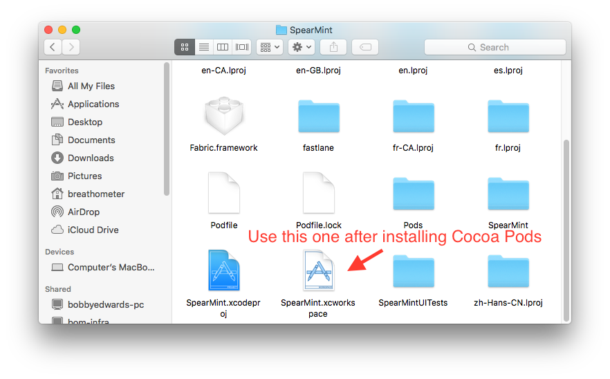

< Return to all blogs
Xcode Best Practices July 2016: Troubleshooting, Pull Requests, Cocoapods, and More
A few coding best practices that I learned in the past couple of weeks from my manager and mentor. These are primarily Xcode-oriented but can easily be applied to other languages and IDE's
Troubleshooting Xcode
Xcode can be a great IDE with powerful tools like autocompletion, but sometimes it does have a tendency to “break.” Errors that pertain to linking are often examples of Xcode glitching out and temporarily self-imploding. These issues can be solved by following these steps:
- Clean: Command + Shift + K
- Deep Clean: Command + Option + Shift + K
- Delete derived data: These are like Xcode’s caches and builds. Each project has a derived data file. To wipe these clean, go to your finder. Hold option, click “Go” in the taskbar, and select “Library.” Next, go to Developer/Xcode/DerivedData/. Select all the files within that folder and delete them by moving them to the trash.
- Quit Xcode
- (Attempt to) rebuild your project
Pull Requests
Git and other version control systems can be confusing things. I, along with most of the developers I know, use GitHub for version control and collaboration on projects. I use GitHub on the daily (I have almost a 300 day commit streak on GitHub right now) and am still intimidated by pull requests. From what I understand, they’re essentially clean ways of merging two branches and grouping commits together.
When working in groups settings, this is incredibly useful both in a developer sense and a moderator sense. The code is branched so it does not accidentally break the master branch (good when you’re updated a popularly used repo or working on a group project). Usually pull requests are significant features or builds. All commit made during a pull request are also grouped together and can easily be reviewed all together by the person who is reviewing the pull request. On GitHub, you can comment on pull requests do other discussion-based actions until the code meets satisfaction and can be integrated into the main branch.
A helpful tool I just learned to see more details about a contribution or the owner of a commit is to add “.patch” to the end of any commit URL. It will show information about who made the commit, when, the differences, etc. — essentially all the raw data associated with a commit. Check it out here one of my recent commits: https://github.com/khou22/khou22.github.io/commit/0e0a5649775f46eb0a856b54a410216c634e8631.patch. (Updated June 26, 2017)
Using Structures for Global Constants
In addition to using structures to store file names as I mentioned in an earlier blog post, it is good practice to create a file, usually named “Constants.swift”, containing global structures to store values. These constants are usually accessed by multiple view controllers and make it easier to standardize. It’s similar to the difference between CSS and SASS. In CSS, you must re-type the values every time, but in SASS you can create and use variables. It makes modifying values much, much easier. Here is an example of standardized colors:
Declaration
struct Colors {
static let mainColor = UIColor(red: 225.0/255.0, green: 105.0/255.0, blue: 15.0/255.0, alpha: 1.0)
static let darkGrey = UIColor(red: 100.0/255.0, green: 100.0/255.0, blue: 100.0/255.0, alpha: 1.0)
static let grey = UIColor(red: 230.0/255.0, green: 230.0/255.0, blue: 230.0/255.0, alpha: 1.0)
static let lightGrey = UIColor(red: 207.0/255.0, green: 207.0/255.0, blue: 207.0/255.0, alpha: 1.0)
}
Usage
Instead of typing in the same RGB values every instance you need a specific color, you can simply call:
let backgroundColor = Colors.mainColor
// It's very easy to change an entire projects theme color simply by modifying a single value in the Constants.swift file
Other Application
Other useful things to store in structures in the Constants.swift file include: screen size (SCREEN_WIDTH = UIScreen.main().bounds.size.width), device types, file names, image names, API keys, storyboard IDs, segue IDs, and any other global constants. It’s good practice to do this and I encourage you to try it out. It’ll make your life signficantly easier in the long run.
Commenting on Code and Readability
Commenting code is one of those practices that is well known, yet not well performed. It’s incredibly important in both personal and team settings. While most people at least understand the necessity, fewer strive for code readability. It is better practice to write readable code with fewer comments using function names, variable names, etc. than to write confusing code with paragraphs of comments. If you’ve ever looked at my code, I am obviously guilty of this and I think the majority of developers could be more conscious about it.
Code readability also includes code refactoring — the process of a restructuring existing code but not changing it’s actual function. To a user, refactoring code should go unnoticed with the exception of maybe load times, speed, etc. It is important to make sure your code is concise as well as well commented and readable. Avoid hard coding and use “for” loops when you can. Another element of this (I’m not sure if this is technically considered refactoring because it’s not so much resturcting) is to remove all print statements and breakpoints once the specific feature is completed and working properly.
Cocoapods
Cocoapods are good and bad depending on who you are. For those that don’t know, cocoapods are libraries built by third parties that you can integrate in your Xcode project with minimal difficulty. They’re similar to Node packages, Python modules, etc.
When developing web apps, I love using libraries, especially Node packages; however, there is a danger in using third party code. Even though it makes your life much easier, in the long run, it could break your app or website. For example, one developer broke thousands of projects by changing 11 lines in their package. It’s a hilariously realistic and daunting story that could apply to your app.
The reason why some are opposed to Cocoapods (including one of my coworkers), is exactly that. If you have too many third party libraries, one mess up could break your project and it would be an ordeal to sift through hundreds of libraries and thousands of files in order to find what was responsible for bringing down your app.
In my opinion, I think you should strike a balance. Cocoapods and other package managers are very useful and take a lot of the heavy lifting out of tasks for developers, but at the same time it’s dangerous to become ultra-reliant on them. You do not want your precious project to be held up entirely by code that you don’t have control over.
A quick note to self that’s somewhat technical: when using Cocoapods, you must open the .workspace file in Xcode not the .xcodeproject file!

I hope you found this post useful. I’m learning a lot about Xcode and especially about how to work in teams. There’s always room for growth and everyone can get better at it. Talk to you in the next one!
Posted in Developer Tools with Swift, Xcode, Package Manager, GitHub